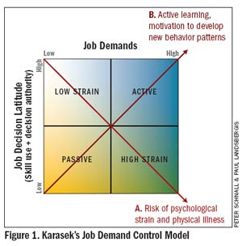

The depressed Developer
Finn Pauls
Are developers more depressed?
- Imposter Syndrome?
- Stress?
- Working Alone?
- Remote Working?
High prevalence Jobs
- Nurses
- Bus Drivers
- Teachers
- Lawyers
- Real Estate Agents
- Cleaning Staff
Industries with frequent interaction with clients
Engineering is Average
No specific data for software developers
50%
Life Time Prevalence of Mental Illness
Job Risk Factors
For Mental Health Problems
Low Social Support
- High Social Support can be preventive
- Supervisors and Colleagues
High Psychological Demands
e.g. fast work pace and high conflicting demands
Job Demand Control Model

Sources
Wow, much research, such papers
- Wulsin et al., 2014: Prevalence rates for depression by industry: a claims database analysis
- Stansfeld & Candy, 2006: Psychosocial work environment and mental health—a meta-analytic review